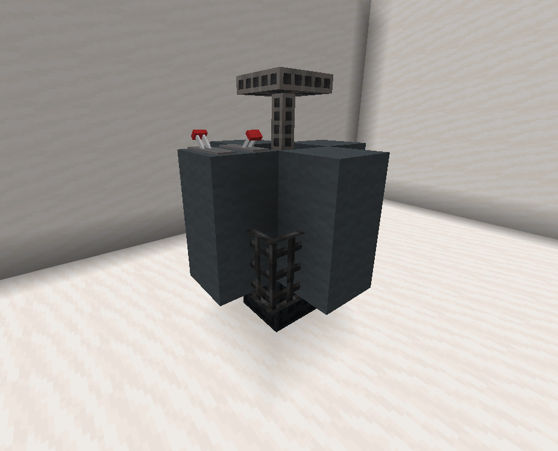
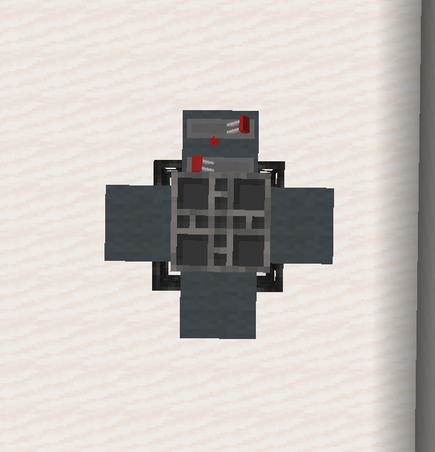
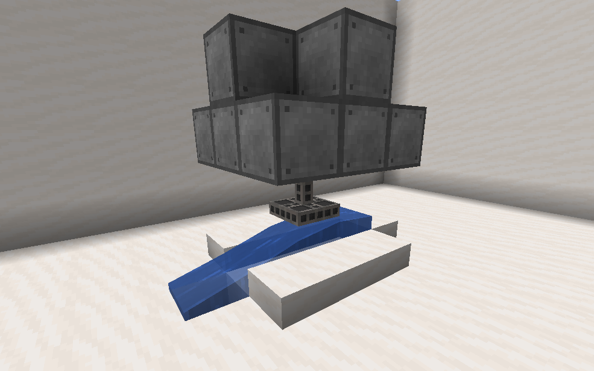
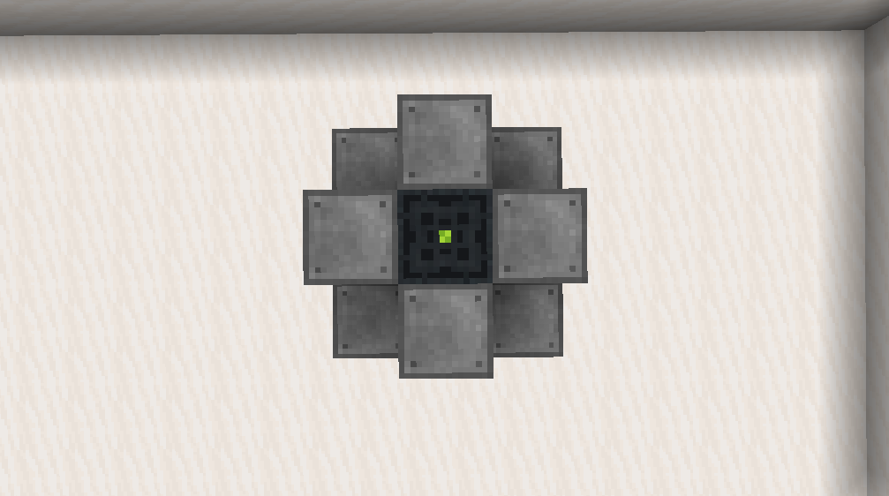
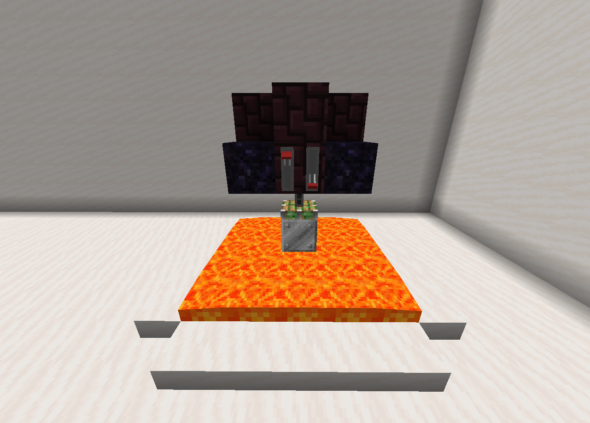
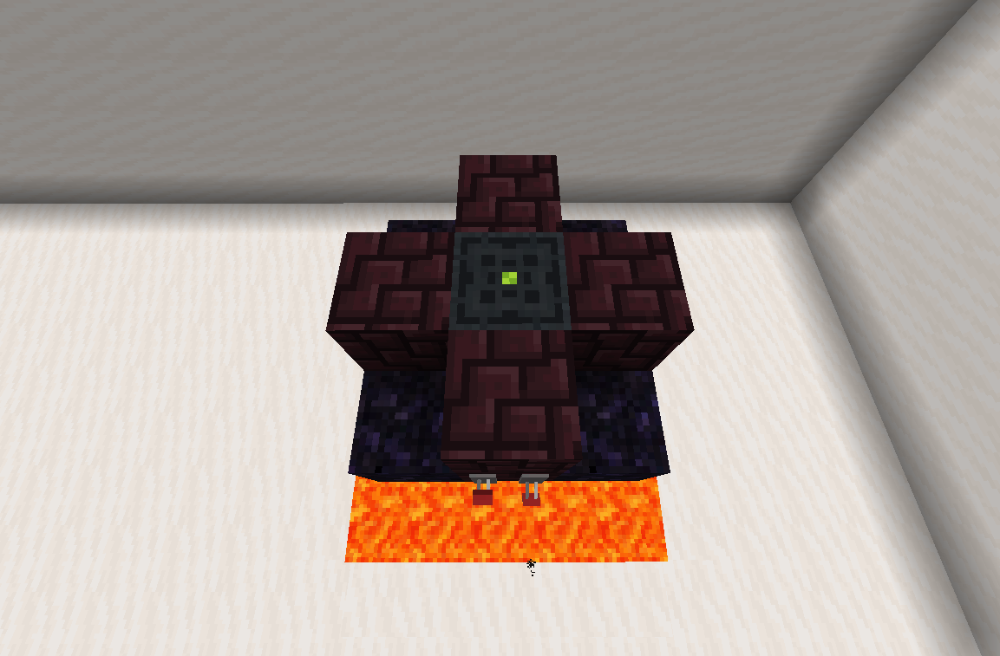

In order to use resonant, you have to generate it first. This page lists the different machines used to
create and store resonant crystals.
To create resonant crystals you will need a generator and something to store it in, generators create
'pulses' that charge storage devices at a fixed rate. Connect the output of a generator to the input of a
battery/capacitor with resonant cables and it will gain a set amount of
resonant per pulse. Each machine has pulse information listed.
Storage
While you can store resonant crystals in normal chests/barrels like you would ordinary items, you have to
use special storage devices in order to power crafts and collect the crystals.
Battery
Batteries are the more efficient, but more expensive way to store resonant, the dropper is used as the
input and storage.
Required blocks
Composite blocks (custom)
2
Dropper
1
Capacity
9 Stacks
Resonant per pulse
2
Capacitor
Capacitors are a cheaper but less efficient storage method, the dropper is used as the input and the
barrel is the storage.
Required blocks
Barrel
1
Dropper
Iron block
Capacity
27 Stacks
Resonant per pulse
4
Generators
Generators are how you actually generate resonant crystals. (go figure) Connect a generator to a
storage device, activate it, and you should start producing resonant.
Combustion generator
Combustion generators get their power from burning fuel, place the fuel in the blast furnace where it
usually goes, the back of the blast furnace is the output.
Required blocks
Redstone lamp (activation)
1
Blast furnace (input/output)
Fuel info
Fuel type
Chance to be consumed
Coal / Charcoal
1/9
Blaze powder / Magma cream
1/24
Coal block / Oxygen canister
1/90
Enriched Uranium Fuelrods
2.5/100 (Also produces extra power)
Pulse frequency
Every 10 seconds
Solar panel
Once built and activated solar panels require no maintenance and will generate pulses on their own,
the only downsides are that they must have sky above them and they must be above y63.
Required blocks
Daylight detector
1
Redstone lamp (activation)
Dropper (output)
Pulse frequency
Orbit/Space
Every 30 seconds
Day
Every 90 seconds
Dawn/Dusk
Every 5 minutes
Night
Every 25 minutes
Wind turbine


Wind turbines are similar to solar panels, once activated they passively generate pulses. But
unlike solar panels the frequency is determined by height, rather than time of day.
Required blocks
Piston (activation)
1
Wool block (any)
8
Iron bars
4
Resonant cable (output)
1
Pulse frequency
In gas giants
Every 15 seconds
y150 - y255
Every 20 seconds
y100 - y149
Every 30 seconds
y61 - y99
Every 45 seconds
y1 - y60
Every five minutes
In orbit/space
Nothing
Hydropower generator


Hydropower generators (aka water turbines) create pulses from flowing water blocks, they are very
reliable but expensive.
Required blocks
Resonant cable (output)
1
Steel block (custom)
12
Piston (activation)
1
A flowing water block below the piston.
Pulse frequency
Every 25 seconds
Geothermal generator


Geothermal generators are similar to hydropower generators, they are reliable and produce tons of power
but are expensive to construct.
Required blocks
Resonant cable (output)
1
Netherbrick
8
Obsidian
4
Sticky piston (activation)
1
Iron block
Requires at least 25 lava source blocks below the iron block.